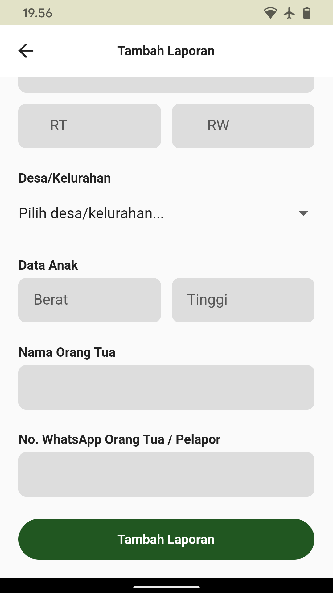
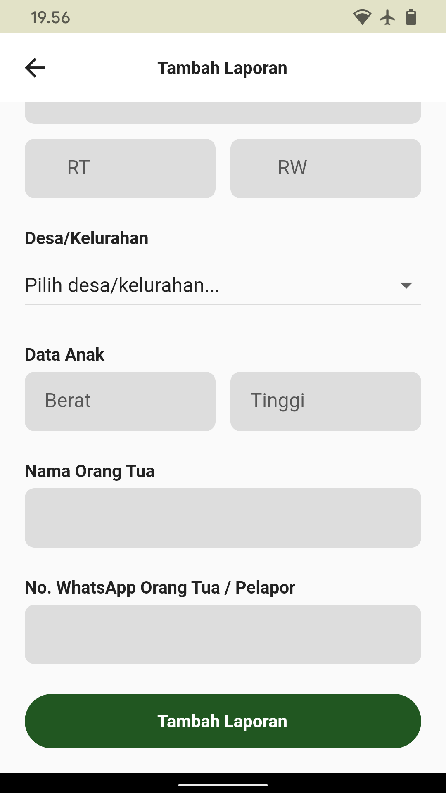
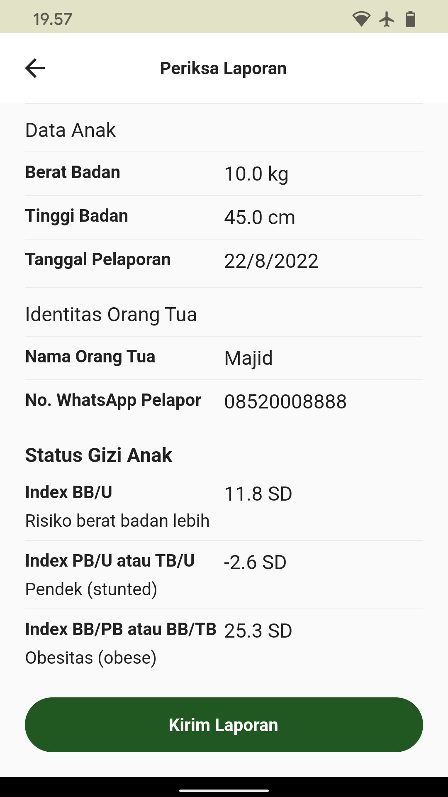
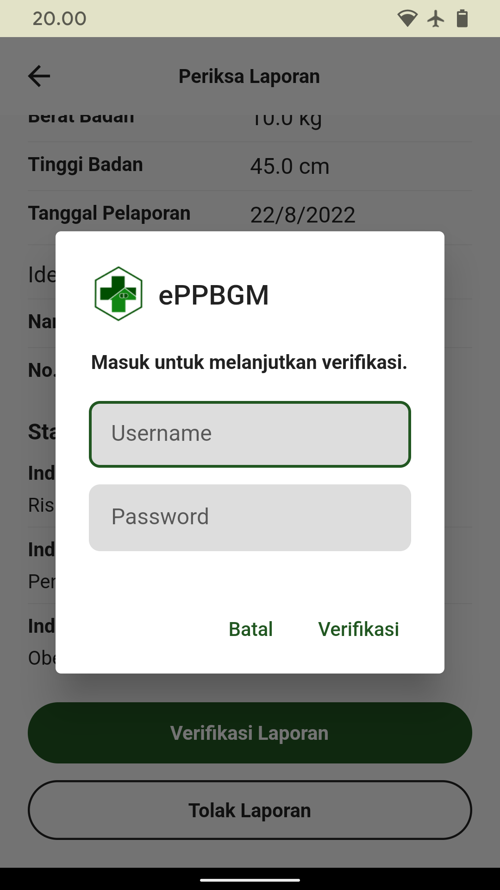
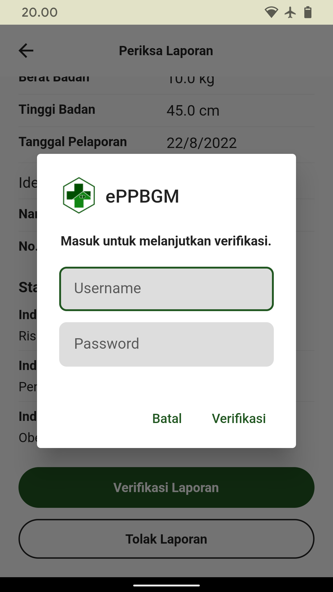

Selamat Datang di Buku Panduan SI MAS GANTENG KELUA
Website atau buku ini adalah buku panduan penggunaan aplikasi SI MAS GANTENG KELUA yang diterbitkan oleh UPT. Puskesmas Kelua.
Instalasi
- Buka aplikasi Play Store pada telepon seluler atau smartphone anda.
- Tekan kotak penelusuran atau pencarian.
-
Ketik
Si mas ganteng keluadan tekan tombol cari yang berada di pojok bawah kanan smarthphone. -
Tekan tombol aplikasi
SI MAS GANTENG KELUA. -
Tekan tombol
Install.
-
Aplikasi siap dibuka dengan menekan tombol
Bukaatau menekan logo aplikasi SI MAS GANTENG KELUA di tampilan utama smartphone anda.

Penggunaan Untuk Umum dan Masyarakat
Melapor / Menambah Laporan
- Tekan tombol
Pelaporanpada halaman utama aplikasi. -
Isi data identitas anak yang dilapor, isi nama anak pada kolom
Nama Anak, pilih jenis kelamin pada tombolJenis Kelamin, isi urutan lahir anak pada kolomAnak Ke Berapa, isi Nomor Kependudukan Anak pada kolomNIK, dan isi dan pilih tanggal lahir anak pada tombol pemilihanTanggal.

-
Isi data domisili anak yang dilapor, isi alamat lengkap pada kolom
Alamat, isi nomor RT domisili anak pada kolomRT, isi nomor RW domisili anak pada kolomRW, dan pilih desa atau kelurahan domisili anak pada tombolDesa/Kelurahan. - Isi data pengukuran anak yang dilapor, isi berat badan anak pada kolom
Beratdan isi tinggi badan anak pada kolomTinggi. - Isi data pelapor, isi nama orang tua anak pada kolom
Nama Orang Tua, dan isi nomor WhatsApp atau nomor telpon pelapor atau orang tua yang melapor pada kolomNo. WhatsApp Orang Tua / Pelapor. -
Tekan tombol
Tambah Laporanuntuk meninjau laporan. 
 -
Setelah meninjau laporan, tekan tombol
Kirim Laporan.
-
Setelah mengirim laporan, hasil sehat tidaknya anak yang dilapor dan daftar tombol kontak konsultasi petugas kesehatan Puskesmas akan ditampilkan. Tekan salah satu tombol nama petugas kesehatan Puskesmas untuk melakukan konsultasi lewat WhatsApp.

Membaca Artikel
- Pada halaman utama aplikasi, tarik dari bawah ke atas untuk melihat daftar artikel.
-
Tekan tombol yang memuat gambar dan judul artikel yang ingin dibaca untuk melihat artikel.

Penggunaan Untuk Petugas Puskesmas
Masuk
- Tekan tombol
Adminyang berada di bawah tengah aplikasi. - Masukkan Email pada kolom
Emaildan Kata Sandi pada kolomKata Sandi -
Tekan tombol
Masuk
Memverifikasi atau Menolak Laporan Masuk
- Setelah masuk, aplikasi akan menampilkan halaman utama untuk admin.
- Tekan tombol
Laporan Masuk. -
Tekan salah satu laporan yang telah masuk dari daftar laporan yang ditampilkan.

-
Periksa detail laporan.
- Tekan tombol
Verifikasi Laporanuntuk memverifikasi laporan atau tekan tombolTolak Laporanuntuk menolak laporan dan memindahkan laporan ke dalam arsip. -
Jika memverifikasi laporan, diperlukan otentikasi tambahan untuk sinkronisasi data ke ePPBGM. Masukkan Username ePPBGM pada kolom
Usernamedan masukkan Password ePPBGM pada kolomPassword, dan tekan tombolVerifikasiuntuk melanjutkan proses verifikasi. Untuk keamanan, aplikasi tidak menyimpan otentikasi ePPBGM, dan detail otentikasi ePPBGM hanya digunakan untuk memverifikasi laporan. 

Melihat Balita dan Pengukuran dari Laporan Terverifikasi
- Setelah masuk, aplikasi akan menampilkan halaman utama untuk admin.
- Tekan tombol
Laporan Terverifikasi. -
Tekan salah satu balita dari daftar balita yang ditampilkan.

-
Tekan tombol
>pada pengukuran yang ingin dilihat.
Memverifikasi Ulang Laporan Tertolak
- Setelah masuk, aplikasi akan menampilkan halaman utama untuk admin.
- Tekan tombol
Arsip Laporan. -
Tekan salah satu arsip laporan dari daftar laporan yang ditampilkan.

-
Setelah detail laporan diperiksa, tekan tombol
Verifikasi Laporanuntuk memverifikasi ulang laporan yang tertolak atau tekan tombolHapus Laporanuntuk menghapus laporan secara permanen.
Melihat Rekapitulasi Laporan
- Setelah masuk, aplikasi akan menampilkan halaman utama untuk admin.
-
Tekan tombol
Rekapitulasi Pelaporanuntuk melihat jumlah laporan masuk, laporan terverifikasi dan laporan terverifikasi berdasarkan desa.